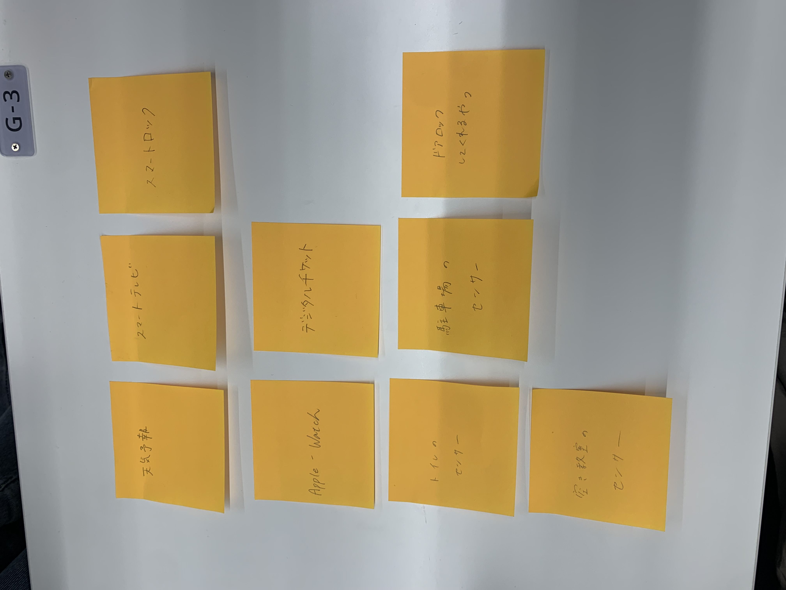
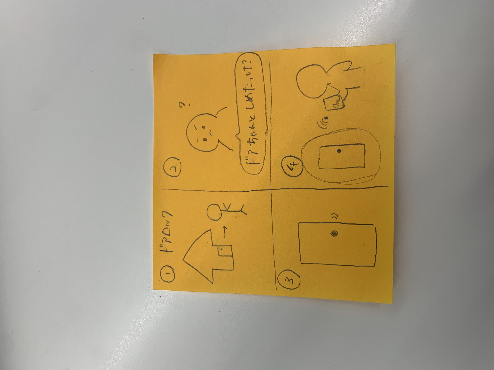

第一回
IoTとは
IoTとは、従来インターネットに接続されていなかった様々なモノがネットワークを通じてサーバーやクラウドサービスに接続され、
相互に情報交換をする仕組みである。センサー機能や駆動装置、家電製品などのモノが、インターネットと接続されることによって、
これまで埋もれていたデータをサーバー上で処理、変換、分析、連携することができるようになる。そのため、これまでになかった
より高い価値やサービスを生み出すことが可能となった。
IoTでできそうなこと

班の中では、一人暮らしをしていて不便だと思ったことやバイト先、外出先で感じたことをもとに考えた結果、
センサーを使ったサービスの案が多くあがった。
私が考えたアイデア
遠隔自動ロック

このアイデア、サービスはすでに存在していると思うが、このサービスは非常によいものだと感じるので、より多くの人に
このサービスについて知ってほしいし、使ってほしいと感じた。実際、一人暮らしをしている私からすると、家の鍵をかけ忘れたかどうか
の心配はよくあることで、その時、誰にも頼むことができないのは、不便であり、どうすることもできないものだった。
なのでこのように、遠隔で鍵をかけられるようドアの鍵をアプリなどと連動させ、遠くにいながらも施錠することができるこのサービスは
必要だと感じた。